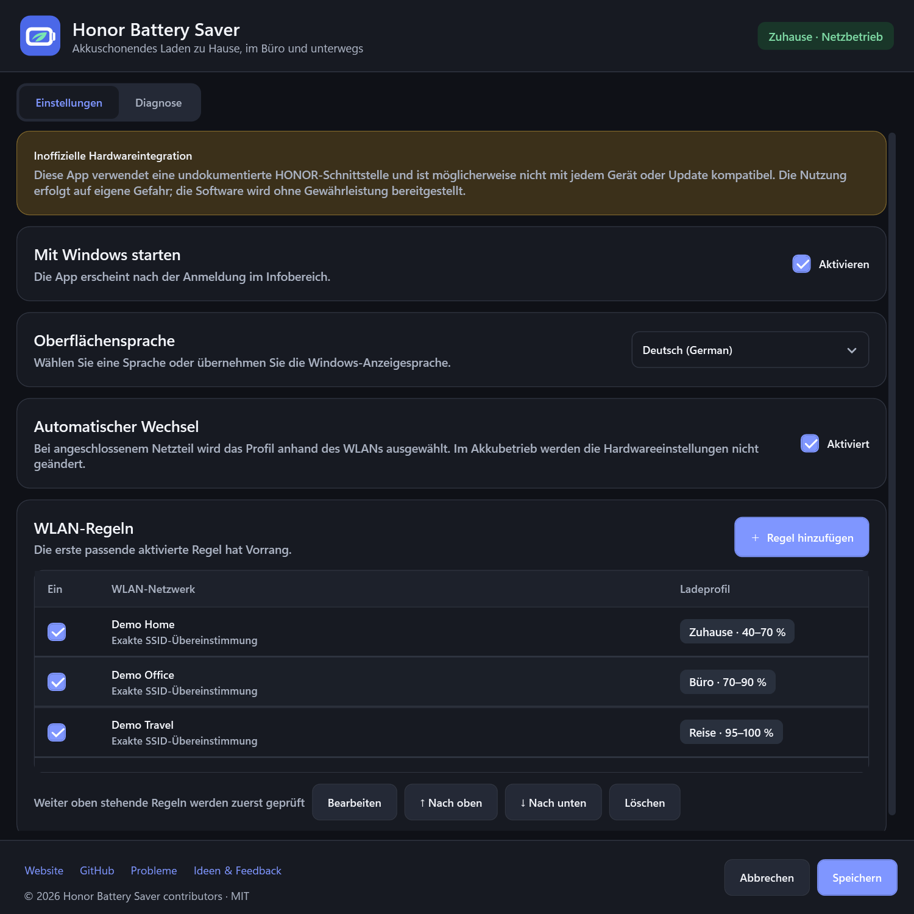
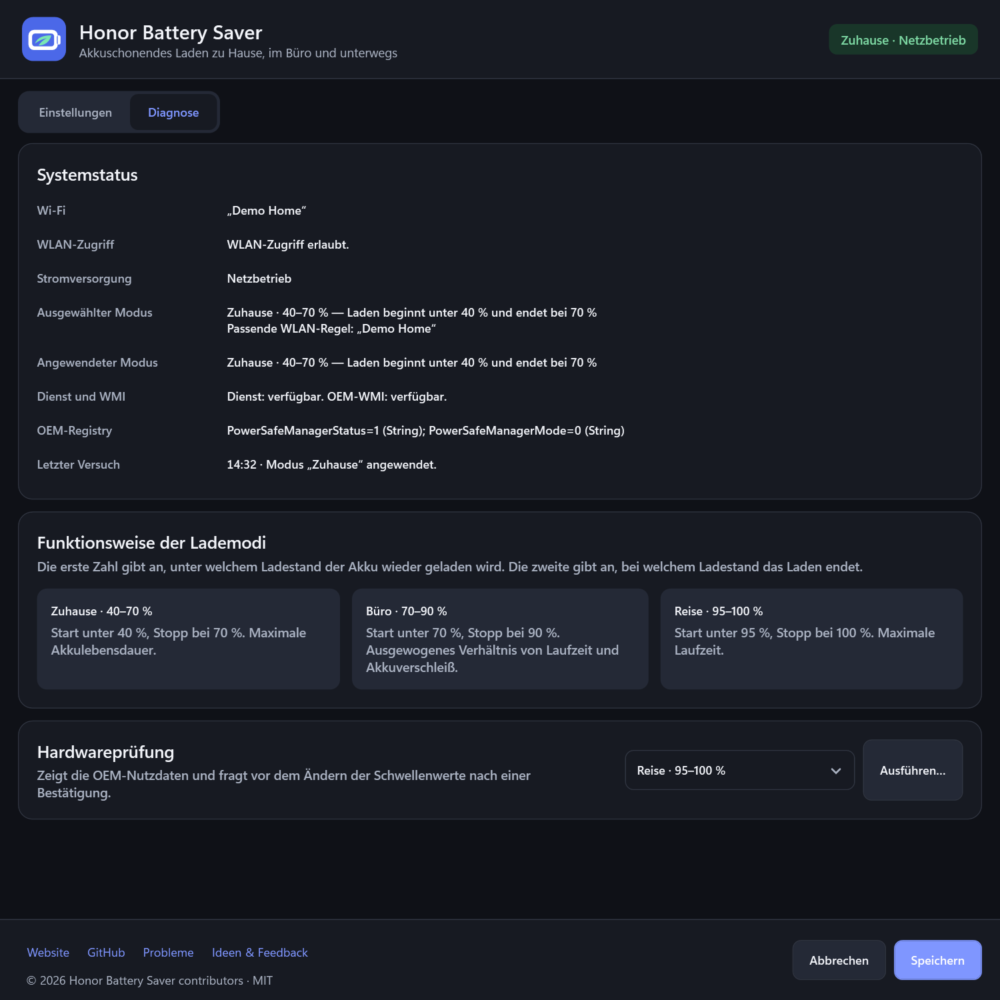

70%
Zuhause
Schonen Sie den Akku mit einem niedrigeren Ladestand, wenn eine Steckdose immer in Reichweite ist.
40%70%
0%100%
Honor Battery Saver senkt die Ladegrenze, wenn eine Steckdose in der Nähe ist, und erlaubt vor einer Reise wieder 100 %. So bleibt der Akku nicht unnötig lange voll geladen — ohne dass Sie die Profile selbst wechseln müssen.
v1.0.0 · Vorabversion · das Installationsprogramm ist noch nicht digital signiert SHA-256 prüfen
Vor einer Reise ist ein voller Akku praktisch. Am Schreibtisch ist er oft nicht nötig. Honor Battery Saver begrenzt den Ladestand automatisch auf einen akkuschonenden Bereich und ermöglicht eine volle Ladung, wenn Sie die zusätzliche Laufzeit brauchen.
Wählen Sie die passende Balance zwischen Akkulebensdauer und Laufzeit. Sobald ein bekanntes WLAN verbunden ist, wird das zugehörige Profil automatisch aktiviert.
Schonen Sie den Akku mit einem niedrigeren Ladestand, wenn eine Steckdose immer in Reichweite ist.
Schonen Sie den Akku und behalten Sie genug Laufzeit für Besprechungen.
Laden Sie den Akku nur dann vollständig auf, wenn Sie die volle Kapazität brauchen.
Die App reagiert auf das Anschließen des Netzteils, WLAN-Wechsel, den Systemstart und das Aufwachen aus dem Energiesparmodus. Sie müssen nicht mehr an die Ladegrenzen denken oder sie selbst anpassen.
Weisen Sie Ihren Heim- und Büronetzwerken die passenden Profile zu.
Bei Netzbetrieb prüft die App die erste passende Regel.
Ein lokaler Dienst setzt die akkuschonende Ladegrenze. In der Diagnose sehen Sie, ob sie angewendet wurde.
Die echte Benutzeroberfläche im dunklen Design. Netzwerknamen und Diagnosewerte sind Beispieldaten und keine Ergebnisse Ihres Geräts.

WLAN-Regeln, automatischer Profilwechsel, Sprache und Windows-Autostart in einem Fenster.
In voller Größe anzeigen
Sehen Sie auf einen Blick, welche Stromquelle und welches Profil aktiv sind, ob der Dienst läuft und ob die Ladegrenze angewendet wurde.
In voller Größe anzeigenHonor Battery Saver benötigt kein Cloud-Konto, sendet keine Telemetrie und speichert weder Passwörter noch BSSIDs oder den Verlauf von WLAN-Scans.
Datenschutzerklärung lesenDie App verwendet eine undokumentierte HONOR-OEM-Schnittstelle. Das Verhalten kann sich nach Updates von BIOS, Treibern oder PC Manager ändern.
Führen Sie die Hardwarediagnose aus und lesen Sie den Haftungsausschluss, bevor Sie die Automatik aktivieren.
Haftungsausschluss lesenHonor Battery Saver wählt zu Hause und im Büro eine akkuschonende Ladegrenze und erlaubt wieder eine volle Ladung, wenn Sie sie brauchen.
Für Windows herunterladen — kostenlos Kostenlos · Open Source · MIT